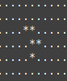

CPSC 220, Fall 2022
Lab 13 and 14: Life
This is the final lab assignment for the semester. You will start it during Lab 13 on November 24, and you can continue working on it in the final lab period on December 1. The completed lab is due the following day, December 2, the last day of classes.
This lab can be a one-person, two-person, or three-person project. There are different requirements for different numbers of people. You can select your own partners. People working as a team should just submit one copy of their work, but should make sure to include everyone's name in the files that are submitted.
You will write several files for the lab. The files should be stored in a folder named "life" or "lab13." You should copy the entire folder into the appropriate folder in /classes/cs220/homework".
Conway's Game of Life
Life in this lab means John Conway's "Game of Life". It's not really a game; it's a cellular automaton. That is, there is a 2D array of "cells". Each cell can be in one of two states, alive or dead. And there are rules that convert one state, or generation, of the array to the next generation.
The rules for the next state of a cell are as follows: Count the number of living neighbors in the eight neighboring cells. If the cell is currently dead and it has exactly three living neighbors, then it is alive in the next generation. If the cell is currently alive and the number of neighbors is not two or three, then it is dead in the next generation. In any other case, the default rule is that the cell has the same state in the next generation. (Three living cells give birth; a living cell with less than two living neighbors dies of loneliness; a living cell with more than three living neighbors dies of overcrowding.)
There is some question about cells that are at the edges of the array. The usual solution is to act as if the top edge of the array is next to the bottom edge, and the left edge is next to the right edge. For example, for a cell in the top row, three of its neighbors are in the bottom row. (The effective shape of the board is a torus—the surface of a doughnut.)
You should try the Game of Life web app, which implements the game on a 64-by-64 board. (For a larger board and a game that can be run very quickly, see the WebGL version.)
The code for the web app is written in Javascript, which is very close to Java. In the code, board and newboard are global 64-by-64 arrays, and board contains the current generation of the Life board that is shown on the screen. Here is the code that replaces the contents of the board with the next generation. Note that the next generation is computed in newboard, and then the data is copied from newboard to board.
/**
* Compute the next generation of the game, and draw the resulting board.
*/
function nextGeneration() {
/* Create the new generation in the newboard array */
for (let r = 0; r < 64; r++) {
for (let c = 0; c < 64; c++) {
newboard[r][c] = board[r][c]; // default value
let neighbors = countNeighbors(r,c);
if (board[r][c]) { // currently alive
if (neighbors < 2 || neighbors > 3) {
newboard[r][c] = false; // dies
}
}
else { // currently dead
if (neighbors == 3) {
newboard[r][c] = true; // comes to life
}
}
}
}
/* Copy the new generation back to the board array. */
for (let r = 0; r < 64; r++) {
for (let c = 0; c < 64; c++) {
board[r][c] = newboard[r][c];
}
}
/* Draw the board. */
... code omitted ...
} // end nextGeneration
/* Count the number of live squares among the eight neighbors of the
square at row r and column c, wrapping around to the opposite edge
of the board for a square on an edge.
*/
function countNeighbors(r,c) {
let up = r-1;
let down = r+1;
let left = c-1;
let right = c+1;
// Adjust values that are outside of the legal range, 0 to 63, to
// wrap around to the opposite edge.
if (up == -1)
up = 63;
if (down == 64)
down = 0;
if (left == -1)
left = 63;
if (right == 64)
right = 0;
// Count the neighbors.
let ct = 0;
if (board[up][left])
ct++;
if (board[up][c])
ct++;
if (board[up][right])
ct++;
if (board[r][left])
ct++;
if (board[r][right])
ct++;
if (board[down][left])
ct++;
if (board[down][c])
ct++;
if (board[down][right])
ct++;
return ct;
}
The Assignment
The Assignment is to implement the Game of Life in x86-64 assembly. You will use a 64-by-64 board. However, instead of using an array of boolean, you will use an array of characters (one-byte values), with '.' representing the dead state and '*' representing the alive state. You won't be able to display the board graphically, but it can be printed out as rows of characters. The main task is to implement the next generation algorithm. The full requirements for one-person, two-person, and three-person versions of the program are given below.
You will be writing at least two .asm files. You should make a folder to contain your work. You can call the folder "life" or "lab13". To turn in your work for the lab, you will submit the entire folder. If several people are working on a project, only one of them should submit, but make sure that everyone's name is in a comment at the top of the main .asm file.
 I have written a sample "main program," test-life.asm, that sets up a board containing the "R-pentomino" pattern shown at the right. It runs the game for 100 generations, by calling an extern function named next_generation. Then it prints out the resulting board.
You will write a .asm file that defines the next_generation function and declares it global so that it can be called from other files. That function must work correctly when linked to my test-life.asm. The file that you write cannot be a main program (that is, it cannot define a global _start label). Note that you can copy the get and put macros, which are defined in test-life.asm, into your file. Those macros allow you work more easily with a 64-by-64 array of bytes.
You can assemble and link the program using the usual build script. If the file that defines next_generation is life-comp.asm, you can use the command, for example,
/classes/cs220/build.sh -c -n test-life.asm life-comp.asm
The "-n" option uses the nasm assembler, which might be better for debugging. If you do use the ddd debugger, remember that clicking "Next" will execute an entire function call. If you want to "step into" the function to see what is happening there, click "Step" instead.
(By the way, you might want to write some helper functions for next_generation. Your code should respect the rule that you should not use r12 through r15 without saving and restoring their values, but you can use all of the "Caller saved" registers freely. And you don't necessarily have to follow the C calling convention for the functions that you use internally. For example, in my program instead of passing row and column number as arguments, I use r8 and r9 like global variables representing those values. Another option is to use variables instead of registers. There are a lot of if statements in the code for counting neighbors, but it's not really all that complicated. My own code used labels .a:, .b:, .c:, .d:, .e:, .f:, .h:, .i:, .j:, .k:.)
The requirement for next_generation is that is that it takes one argument, passed in rdi, that is the address of the board array in memory. The function should replace the contents of that array with the next generation of the game. The function does not return a value. Your file will need another array, to hold the new generation as it is being computed. You can imitate the sample Javascript code that is shown above.
For a one-person project, you should also write your own main program. That program should make a random initial life board. It should use the standard C rand() function to decide whether each cell on the board should be alive or dead. It should then call next_generation some number of times, and print out the board at the end. You can start with a copy of test-life.asm and just change the part that sets up the initial board. (But for testing your work, I suggest another copy of test-life.asm in which you set up a simple pattern in the board and call next_generation just once.)
For a two-person project, you should do all the work required for a one-person project. In addition, you should write a second main program that reads the initial state of the board from an input file, calculates some number of generations, and then writes the result to an output file. You can hard-code the file names and the number of generations into your program. You might want to use a third .asm file that contains functions for working with the files.
For a three-person project, you should do all the work required for a one-person project. In addition, you should write a second main program that lets the user work interactively with the game of life. The program should present the user with a menu containing (at least) the following options:
1. Make a random board. 2. Read board from file. 3. Make next generation. 4. Run for multiple generations. 5. Print the board. 6. Save the board to a file. 7. EXIT
If the user chooses option 2 or 6, you should get the name of the file from the user. If the user chooses option 4, you should get the number of generations from the user. After doing any of the options 1 through 6, of course, you should continue the program by presenting the menu again. You should check for errors in the user's input and continue the program. You might want to use a third .asm file that contains functions for working with the files.
For some extra credit, generalize the program so that it can work with boards of different sizes. For that to work, the next_generation function should take three arguments: the address of the board array, the number of rows in the board, and the number of columns in the board. (The sample main program, test-life.asm, already passes these three parameters to next_generation, but they should be ignored unless you are doing the extra credit version.) You should write main programs that will test your work for more than one board size. If you are doing the two-person version, you should assume that files specify the number of rows and the number of columns, in addition to the contents of the board. If you are doing the three-person version, you should include an option in the menu to let the user pick the board size. Note that you will have to modify the get and put macros to use a variable instead of a constant for the number of columns.
The part of the correct output from test-life.asm that contains living cells is shown here:
................................................................ ................................................................ .......................**....................................... ......................*..*...................................... ......................*..*......**.............................. .......................**.......**.............................. ............................................**.................. .....................*.**...........**.....**..................* *...................**.**...........**.......*................** .*...........................................................**. **................**.***.....................................**. ***...............**..**.......***.............................. **..................*****....**.*.*.....**....................*. *.....................**.*..*.*...*.....**...................*.. .......................*.*..*...*.*..*.......................... *.......................*...*.*.**...*.......................*.. .............................***.....*........................** ................................................................ **...........................................................**. *............................................................... ..**.................................................**.....*... ..**.................................................**.....*... ...*............................................................ ..*..........................................................*.. ..*............................................................* **.............................................................* ................................................................ ................................................................